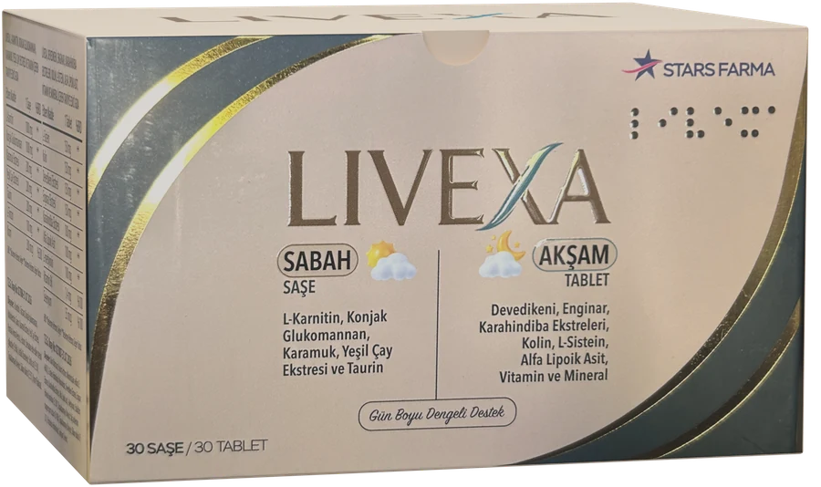
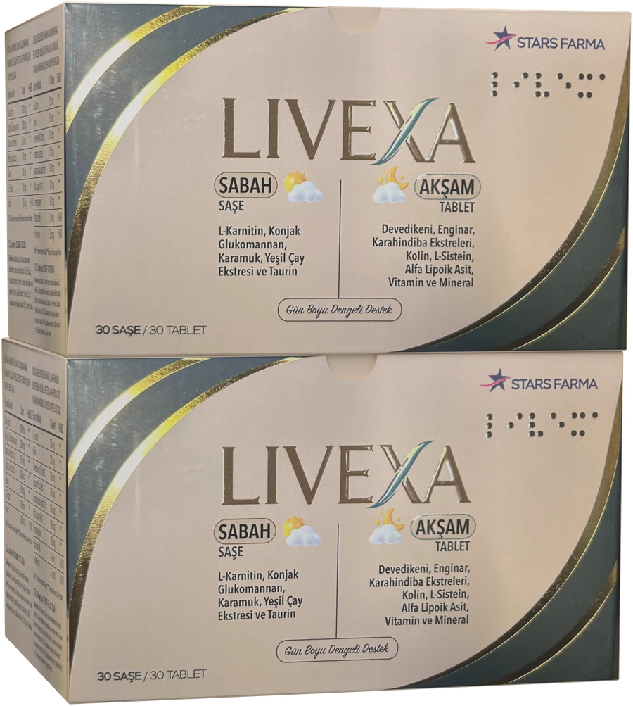

Satın al
LIVEXA
LIVEXA, SABAH SAŞE ve AKŞAM TABLET adlı iki ayrı formülden oluşan bir takviye edici gıdadır. Sabah bölümü suya karıştırılan bir saşe, akşam bölümü bir tablettir. İkisi aynı kutuda gelir, ayrı ayrı satılmaz.


Fiyat — 1 kutu
2.750 TL
(KDV ve kargo dahil)
Fiyat — 2'li paket (2 kutu)
5.200 TL
(KDV ve kargo dahil)
Ödeme altyapısı yakında açılacaktır. Şu anda sipariş alınmamaktadır.
Kargo ücreti Satıcıya aittir, sizden alınmaz
Nasıl sipariş verilir
Ödeme altyapısı açıldığında sipariş bu site üzerinden verilir. Ön Bilgilendirme Formu'nu ve Mesafeli Satış Sözleşmesi'ni ödemeden önce okur ve onaylarsınız. Sözleşme, bu onayın ardından ödemenin tamamlanmasıyla kurulur.
- 1 kutu ya da 2'li paket seçin ve Ön Bilgilendirme Formu ile Mesafeli Satış Sözleşmesi'ni okuyun.
- Aşağıdaki kutuyu işaretleyin. Kutu önceden işaretli gelmez; işaretlenmeden ödeme adımına geçilemez.
Ön bilgilendirme formunu okudum, mesafeli satış sözleşmesini onaylıyorum.
- Ödeme sayfasına geçin ve ödemeyi tamamlayın.
Ödeme sayfasına geç
Ödeme altyapısı yakında açılacaktır.
- Ödeme altyapısı açıldığında ödemeler PayTR güvenli ödeme sayfası üzerinden alınacaktır.
- Kart bilgileriniz bu sitede alınmaz, işlenmez ve saklanmaz. Ödeme Stars Farma adına alınır.
- Sipariş için sağlık bilginiz istenmez.
Kargo ve iade, kısaca
Siparişinizi Stars Farma hazırlar ve Yurtiçi Kargo ile gönderir. Saat 15:30'a kadar ödemesi tamamlanan siparişler aynı gün, sonrakiler ertesi iş günü kargoya verilir. Hafta sonu ve resmî tatil günlerinde kargo çıkışı yapılmaz. Kargo 1–3 iş günü içinde teslim edilir. Gönderim yalnızca Türkiye içine yapılır. Teslim, her durumda sipariş tarihinden itibaren en geç 30 gün içinde yapılır.
Teslim aldığınız günden itibaren 14 gün içinde cayma hakkınız vardır. Ambalajı açılmış ürün, sağlık ve hijyen nedeniyle iade alınmaz; 2'li pakette bu kural her kutu için ayrı uygulanır. Hakkın nasıl kullanılacağı ve istisnanın kapsamı İade ve cayma sayfasında yazar.
| Ürün | LIVEXA, takviye edici gıda |
|---|---|
| Kutu içeriği | 30 saşe ve 30 tablet |
| Net miktar | 30 saşe / 30 tablet |
| T.E.G. Onay No | 027086-31.07.2026 (saşe) · 027087-31.07.2026 (tablet) |
| İşletme Kayıt No | TR-06-K-074972 |
| Kullanıcı grubu | 11 yaş ve üzeri |
Etiket bilgileri
SABAH SAŞE — 1 saşe
| Etken Madde | 1 Saşe | %BRD |
|---|---|---|
| L-Karnitin | 1000 mg | ** |
| Konjak Glukomannan | 1000 mg | ** |
| Karamuk Ekstresi | 200 mg | ** |
| Yeşil Çay Ekstresi | 200 mg | ** |
| Taurin | 200 mg | ** |
| L-Tirozin | 100 mg | ** |
| Krom | 200 mcg | %500 |
Bileşenler: L-Karnitin L-Tartarat, Konjak glukomannan, Maltodekstrin, Taurin, Karamuk Ekstresi, Yeşil Çay Ekstresi, Portakal Aroma Vericisi, L-tirozin, Steviadan elde edilen steviol glikozitler (E 960a), Asitlik Düzenleyici; Sitrik asit (E 330), Topaklanmayı Önleyici; Silikon dioksit (E 551), Krom Pikolinat.
T.E.G. Onay No: 027086-31.07.2026
AKŞAM TABLET — 1 tablet
| Etken Madde | 1 Tablet | %BRD |
|---|---|---|
| L-Sistein | 150 mg | ** |
| Kolin | 150 mg | ** |
| Devedikeni Ekstresi | 150 mg | ** |
| Enginar Ekstresi | 150 mg | ** |
| Karahindiba Ekstresi | 100 mg | ** |
| Alfa Lipoik Asit | 100 mg | ** |
| L-metiyonin | 100 mg | ** |
| Vitamin B6 | 1,4 mg | %100 |
| Selenyum | 55 mcg | %100 |
Bileşenler: Kolin Bitartarat, Hacim Arttırıcı; Mikrokristalin selüloz (E 460(i)), L-Sistein Hidroklorür Monohidrat, Devedikeni Ekstresi, Enginar Ekstresi, Karahindiba Ekstresi, Alfa Lipoik asit, L-Metiyonin, Stabilizör; Polivinil pirolidon (E 1201), Topaklanmayı Önleyici; Yağ asitlerinin magnezyum tuzları (E 470b), Topaklanmayı Önleyici; Silikon dioksit (E 551), Piridoksin Hidroklorür, Sodyum Selenit.
T.E.G. Onay No: 027087-31.07.2026
BRD: *Beslenme Referans Değeri **Beslenme Referans Değeri Yoktur.
İlgili sayfalar
- Teslimat ve kargo
- İade ve cayma
- Ön bilgilendirme formu
- Mesafeli satış sözleşmesi
- KVKK aydınlatma metni
- Gizlilik ve çerez politikası
- Hakkımızda
- İletişim
Satıcı bilgileri
Bu sitede satıcı Stars Farma'dır. Fatura, teslimat ve iade Stars Farma tarafından yürütülür. Fatura e-Arşiv fatura olarak düzenlenir.
| Unvan | STARS FARMA İLAÇ MEDİKAL TİCARET PAZARLAMA LİMİTED ŞİRKETİ |
|---|---|
| MERSİS No | 0781108979900001 |
| Vergi dairesi ve no | Yatağan Vergi Dairesi · 7811089799 |
| Merkez adresi | Konak Mah. 157 Sk. No: 8 İç Kapı No: 3 Yatağan / Muğla |
| Telefon | 0530 967 02 16 |
| E-posta | siparis@livexa.com.tr · info@livexa.com.tr |
| Fatura | fatura@livexa.com.tr |
| İşletme Kayıt No | TR-06-K-074972 |
| Marka | LIVEXA |
Zorunlu bilgiler
Takviye edici gıdadır. İlaç değildir. Hastalıkların önlenmesi veya tedavi edilmesi amacıyla kullanılmaz.
Takviye edici gıdalar normal beslenme yerine geçemez. Dengeli ve çeşitli beslenme ile sağlıklı bir yaşam tarzı önemlidir.
Tavsiye Edilen Günlük Alım Dozu: Takviye edici gıda olarak günde 1 kere 1 tablet kullanılması önerilir.
Tavsiye Edilen Günlük Alım Dozu: Takviye edici gıda olarak günde 1 saşenin 1 bardak suya (200ml) karıştırılmasıyla kullanılması önerilir.
Tavsiye edilen günlük porsiyonu aşmayın.
Kullanıcı Grubu: 11 yaş ve üzeri kullanım için uygundur.
Uyarılar: Çocukların ulaşamayacağı yerde saklayın. Hamilelik ve emzirme dönemi ile hastalık veya ilaç kullanılması durumlarında doktorunuza danışın. Tirozin metabolizma bozukluğu olan kişiler tarafından kullanılmamalıdır.
Saklama Koşulları: 25 C altında kuru ve serin yerde muhafaza ediniz.
Ürün Sahibi: Stars Farma İlaç Medikal Ticaret Pazarlama Limited Şirketi Konak Mah. 157.Sok. No:8/3 Yatağan/Muğla
İşletme Kayıt No: TR-06-K-074972
Menşe Ülke: Türkiye (Takviye edici gıdanın ana bileşeninin menşei, ürünün menşe ülkesinden farklıdır.)